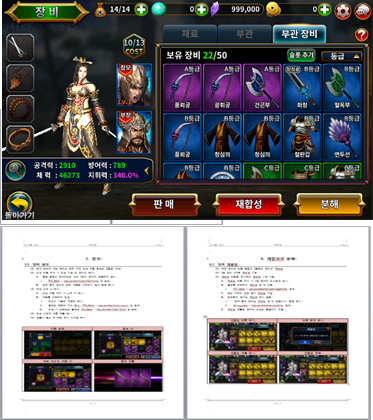

전용 장비
- 캐릭터별 특수 능력치와 고유 스킬
- 장비 초월과 성장 구조
05 · COLLECTIBLE ACTION RPG
캐릭터 수집 이후의 성장 목표를 만드는 전용 장비, 무한 웨이브형 상시 콘텐츠, 전투 흐름을 고려한 레벨 디자인을 기획했습니다.

캐릭터를 획득하고 성장이 정체된 뒤에는 다음 목표가 약해질 수 있습니다. 캐릭터별 전용 장비를 두고, 보유 시 특수 능력치와 고유 스킬을 제공하도록 설계했습니다.
장비에도 초월 시스템을 적용해 캐릭터 수집에서 전용 장비 획득과 강화로 이어지는 성장 사이클을 구성했습니다.

캐릭터 수집 이후에도 해당 캐릭터를 더 성장시킬 다음 목표를 제시하고, 장비 획득과 강화가 이어지는 구조를 만드는 것이 목표였습니다.